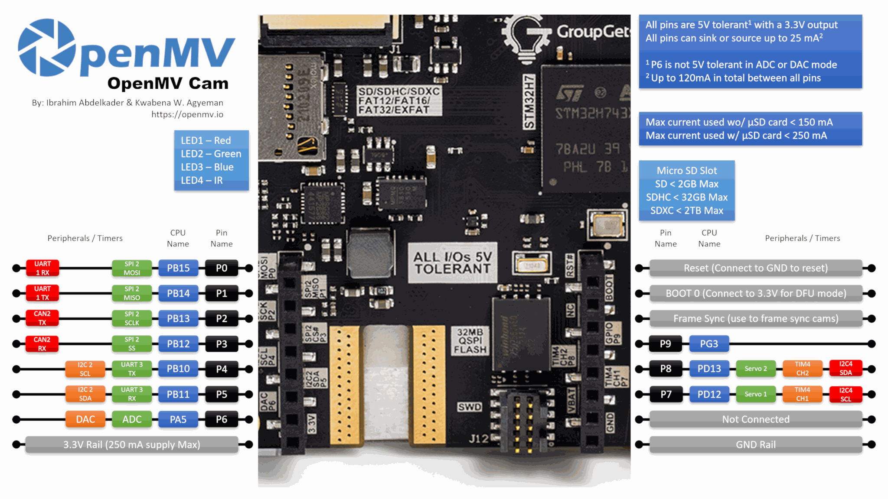

OpenMV Pure Thermal¶
OpenMV Pure Thermal 是一款完整系统级热成像开发板，围绕 STMicroelectronics STM32H743（Cortex‑M7 @ 480 MHz）构建，配备 64 MB 外部 SDRAM、32 MB QSPI 闪存、硬件 JPEG 编解码器、4.3" 800×480 IPS 电容触摸屏、HDMI 输出、FLIR® Lepton® 热成像插座以及一颗 500 万像素 OV5640 可见光摄像头。它还集成了 Wi‑Fi、microSD 插座、激光测距仪、蜂鸣器和一颗大功率白光照明灯。

完整的数据手册、照片和尺寸信息，请参阅 OpenMV Pure Thermal 产品页面。
主要特性¶
STMicroelectronics STM32H743XI Cortex‑M7，主频 480 MHz。
硬件 JPEG 编码器/解码器。
64 MB 外部 SDRAM（约 400 MB/s）外加 1 MB 内部 SRAM。
2 MB 内部闪存 + 32 MB 外部 QSPI 闪存（约 50 MB/s 读取）。
OV5640 500 万像素卷帘快门可见光传感器。
FLIR® Lepton® 插座 — 兼容任意 Lepton 1/2/2.5/3/3.5 模块，支持辐射测量或非辐射测量型号，可提供以摄氏度为单位的逐像素温度。
4.3" 800×480 IPS 电容触摸屏（24 位色彩 @ 60 Hz），支持最多 5 点手势。
通过 TFP410 DVI 串行器实现的 HDMI 输出 — 最高可达 1280×720 @ 60 Hz。
通过 WINC1500 实现的 Wi‑Fi；开箱即支持基于 RTSP 的 MJPEG 传输。
全速 USB‑C（12 Mb/s，900 mA 限流）— 对主机呈现为 VCP + USB 大容量存储设备，同时还负责充电。
microSD 插座 — SD 卡最高 2 GB，SDHC 最高 32 GB，SDXC 最高 2 TB。
VL53L1CX 激光测距仪（最远约 4 m）。
蜂鸣器，音量/频率可通过软件控制。
除了用户 RGB 状态 LED 外，还配有 大功率白光照明 LED。
LiPo 电池连接器，支持 500 mA USB 充电。
10 个 I/O 引脚，可耐受 5 V，输出 3.3 V，每个引脚 25 mA（总计 120 mA），支持中断。P6 在 ADC 或 DAC 模式下 不 耐受 5 V。
ARM 10 引脚 SWD 连接器，用于 ST‑LINK / J‑Link 调试。
Qwiic 连接器，用于 I²C 外设。
备注
开发板左下边缘有一个插槽，可选配 ¼"–20 三脚架螺母。出厂时未安装 — 如需将开发板安装到标准相机三脚架上，请将一颗螺母焊入该插槽。
引脚分布¶
{kind=link}

引脚参考¶
引脚名称 |
功能 |
|---|---|
P0 |
UART1 RX / SPI2 MOSI |
P1 |
UART1 TX / SPI2 MISO |
P2 |
SPI2 SCK / FDCAN2 TX |
P3 |
SPI2 NSS (CS) / FDCAN2 RX |
P4 |
I2C2 SCL / UART3 TX / TIM2 CH3 |
P5 |
I2C2 SDA / UART3 RX / TIM2 CH4 |
P6 |
ADC / DAC / TIM2 CH1 |
P7 |
I2C4 SCL / TIM4 CH1 |
P8 |
I2C4 SDA / TIM4 CH2 |
P9 |
数字 I/O |
RESET |
拉至 GND 以复位开发板 |
SYN |
帧同步焊盘 — 未连接 |
VIN |
扩展板 VIN 焊盘 — 未连接 |
BOOT0 |
上电时拉至 3.3 V 以进入 DFU / ROM 引导加载程序 |
BUZZER |
板载压电蜂鸣器（由 TIM2/PWM 驱动） |
LED_RED |
RGB 状态 LED 红色通道（低电平有效） |
LED_GREEN |
RGB 状态 LED 绿色通道（低电平有效） |
LED_BLUE |
RGB 状态 LED 蓝色通道（低电平有效） |
LED_WHITE |
大功率白光照明 LED |
备注
扩展板/排针上的 SYN 和 VIN 焊盘在 Pure Thermal 上 没有任何电气连接 — 它们仅为兼容排针而保留。请改为通过 USB‑C 或板载 LiPo 电池连接器为开发板供电（见下文 电源引脚）。另请注意，VIN 焊盘在板上丝印标注为 VBAT（标注错误）— 其位置是标准的 OpenMV 排针 VIN 引脚，无论如何都未连接。
电源引脚¶
3.3V — 经稳压的 3.3 V 电源轨。可为扩展板提供最高 250 mA 电流。
GND — 公共地。
Pure Thermal 通过 USB‑C 或板载 LiPo 电池连接器 供电。USB‑C 端口总电流 限流为 900 mA，并可以 500 mA 为 LiPo 充电，因此支持在接入 USB 的同时连接电池。
板载 电源按钮 用于切换系统电源轨的开关状态，无论开发板由 USB 还是 LiPo 供电均可使用。按住按钮数秒 即可切换状态 — 短按会被忽略，以防止意外关机。
电源选择遵循两条简单规则：
只有当电池电压高于 3 V 时，电池才会为开发板供电。低于该阈值时，板载 PMIC 会断开电池连接，以防止过放电损坏电池。
接入 USB 时，由 USB 为开发板供电，同时在后台为已连接的 LiPo 充电。
LiPo 连接器还具备 反向电压保护，因此即使将电池反向插入也不会损坏开发板。
备注
开发板还将 电池电压 和 电池电流检测 信号回送到 MCU 的 ADC 通道，但固件目前尚未加入对二者的支持。
恢复与调试引脚¶
RESET — 拉至 GND 以复位开发板。Pure Thermal 板上还有一个专用的 RESET 按钮，作用相同。
BOOT0 — 在为开发板供电时将其拉至 3.3 V，可进入 STM32 ROM 引导加载程序（DFU 模式）。OpenMV IDE 使用此模式重新刷写板载引导加载程序。板上的专用 BOOT0 按钮 作用相同 — 上电时按住它即可。
开发板在 GPIO 排针旁提供了一个 SWD 调试排针（RST / SWCLK / SWDIO / SWO），兼容 ST‑LINK 和 SEGGER J‑Link 适配器。此外还配有一个独立的 ARM 10 引脚 SWD 连接器 — 它承载相同的 SWD 信号（无完整 JTAG），但采用标准的 0.05" 10 引脚封装形式。
备注
SWO 跟踪引脚与板载 FLIR® Lepton® 的 SPI 时钟共用。SWO 无法与 Lepton 同时使用 — 二者只能择其一。
板上还配有第三个 PURE Modules Debug 连接器。它引出了少量面向调试的信号（SWCLK、SWDIO、RST、SPI2_MISO、SPI2_MOSI、VBUS、3.3 V、GND 以及两个 GPIO 引脚），用于连接配套模块。该连接器上的两个 GPIO 引脚由内部 软件模拟（bit‑banged）I²C 总线 驱动，而非硬件外设。
所有三个调试连接器（内联 SWD 排针、ARM 10 引脚 SWD 连接器以及 PURE Modules Debug 连接器）均以 3.3 V 为参考电平 — 连接前请确保你的调试适配器已配置为 3.3 V 逻辑电平。
板载外设¶
LED¶
Pure Thermal 板上共有三颗 LED：
用户 RGB LED — 可通过软件控制，以
LED_RED、LED_GREEN和LED_BLUE暴露:from machine import LED LED("LED_RED").on() LED("LED_GREEN").on() LED("LED_BLUE").on()
白光照明灯 — 通过
LED_WHITE驱动。LED_WHITE在硬件上接为 高电平有效，而固件将其他所有板载 LED 视为低电平有效，因此请使用low()/high()而非on()/off()（后者会使逻辑反转）:from machine import LED light = LED("LED_WHITE") light.low() # turn the white LED ON light.high() # turn the white LED OFF
充电 LED — 由板载电源管理硬件直接驱动，无软件控制。无论系统电源轨开启还是关闭（即电源按钮处于任一状态）它都能工作。
颜色
含义
蓝色
正在充电 — 参见勘误：充电完成时可能不会熄灭
绿色
充电完成 — 参见勘误：可能无法可靠触发
红色
电量低（≤ 3.2 V，仅在未主动充电时）
蜂鸣器¶
板载压电蜂鸣器接到一个定时器通道 — 使用 machine.PWM 驱动它即可发出音调，并通过软件控制频率（音高）和占空比（音量）:
import time
from machine import Pin, PWM
beep = PWM(Pin("BUZZER"), freq=2_000, duty_u16=32768) # ~50% duty
time.sleep_ms(500) # sound for 0.5 s
beep.deinit()
摄像头传感器¶
OV5640 是 Pure Thermal 上的主 CSI — 传入 cid=csi.OV5640 即可显式寻址它:
import csi
cam = csi.CSI(cid=csi.OV5640)
cam.reset(hard=True)
cam.pixformat(csi.RGB565)
cam.framesize(csi.WVGA)
cam.snapshot(time=2000) # let auto‑exposure settle
while True:
img = cam.snapshot()
OV5640 内置 JPEG 压缩器。将 csi.CSI.pixformat 设为 csi.JPEG，传感器便会通过摄像头总线直接向相机输出压缩帧，从而使高分辨率采集变得实用：csi.HD（1280×720）、csi.FHD（1920×1080）以及完整的 500 万像素 csi.WQXGA2（2592×1944）都能以 JPEG 形式传输。可通过 csi.CSI.quality（0‑100，越高表示帧越大、细节越多）调节压缩:
{kind=link}
cam.pixformat(csi.JPEG)
cam.framesize(csi.WQXGA2)
cam.quality(90)
OV5640 配有音圈致动器自动对焦镜头。通过 csi.CSI.ioctl 并传入 csi.IOCTL_TRIGGER_AUTO_FOCUS 可触发一次自动对焦 — 传感器会扫描一次对焦电机，并锁定眼前的物体:
cam.ioctl(csi.IOCTL_TRIGGER_AUTO_FOCUS)
每当场景发生变化时重新发出该 ioctl — 自动对焦是单次的，并非连续对焦。
备注
OV5640 的 STROBE 输出（用于同步闪光 / 红外照明）在 Pure Thermal 上已连接到 MCU，但固件目前尚未加入对它的支持。
热成像摄像头传感器¶
FLIR® Lepton® 插座在同一套 csi --- 摄像头传感器 API 中呈现为第二个 CSI。传入 cid=csi.LEPTON 即可寻址它，并跳过硬件复位:
import csi
lepton = csi.CSI(cid=csi.LEPTON)
lepton.reset(hard=False)
lepton.pixformat(csi.GRAYSCALE)
lepton.framesize(csi.QVGA)
while True:
img = lepton.snapshot()
备注
Lepton 的 VSYNC 输出（每帧热成像发出一个脉冲）在 Pure Thermal 上已连接到 MCU，但固件目前尚未加入对它的支持。
两个 CSI 可以并行运行。下面的示例从 OV5640 获取一帧彩色图像，从 Lepton 获取一帧热成像图像，然后使用 Ironbow 调色板以及在低强度处渐变为透明的 alpha 蒙版，将 Lepton 图像叠加到彩色帧之上:
import csi
import image
import math
alpha_pal = image.Image(256, 1, image.GRAYSCALE)
for i in range(256):
alpha_pal[i] = int(math.pow((i / 255), 2) * 255)
csi0 = csi.CSI()
csi0.reset(hard=True)
csi0.pixformat(csi.RGB565)
csi0.framesize(csi.WVGA)
csi1 = csi.CSI(cid=csi.LEPTON)
csi1.reset(hard=False)
csi1.pixformat(csi.GRAYSCALE)
csi1.framesize(csi.QVGA)
img1 = image.Image(csi1.width(), csi1.height(), csi1.pixformat())
while True:
img0 = csi0.snapshot()
csi1.snapshot(blocking=False, image=img1)
img0.draw_image(
img1, 0, 0,
color_palette=image.PALETTE_IRONBOW,
alpha_palette=alpha_pal,
hint=image.BILINEAR,
)
机器学习¶
ml --- 机器学习 在 Cortex‑M7 上使用 CMSIS‑NN 内核运行量化的 TFLite 模型 — 足以让紧凑型检测器以每秒几帧的速度运行。位于只读 /rom 文件系统上的模型可直接从闪存加载，无需复制到 RAM。下面是一个 128×128 的 BlazeFace 检测器，它将检测到的人脸及其六个关键点叠加到可见光摄像头的每一帧上:
import csi
import time
import ml
from ml.postprocessing.mediapipe import BlazeFace
# Initialize the sensor.
csi0 = csi.CSI()
csi0.reset()
csi0.pixformat(csi.RGB565)
csi0.framesize(csi.VGA)
csi0.window((400, 400))
# Load built-in face detection model
model = ml.Model("/rom/blazeface_front_128.tflite", postprocess=BlazeFace(threshold=0.4))
print(model)
clock = time.clock()
while True:
clock.tick()
img = csi0.snapshot()
# faces is a list of ((x, y, w, h), score, keypoints) tuples
for r, score, keypoints in model.predict([img]):
ml.utils.draw_predictions(img, [r], ("face",), ((0, 0, 255),), format=None)
# keypoints is a ndarray of shape (6, 2)
# 0 - right eye (x, y)
# 1 - left eye (x, y)
# 2 - nose (x, y)
# 3 - mouth (x, y)
# 4 - right ear (x, y)
# 5 - left ear (x, y)
ml.utils.draw_keypoints(img, keypoints, color=(255, 0, 0))
print(clock.fps(), "fps")
激光测距仪¶
板载的 ST VL53L1CX 飞行时间测距仪接到 I²C 总线 2。使用冻结的 vl53l1x --- VL53L1X ToF 距离传感器驱动 驱动可获取最远约 4 m 的距离读数:
import time
from machine import I2C
import vl53l1x
bus = I2C(2)
tof = vl53l1x.VL53L1X(bus)
while True:
print("Distance:", tof.read(), "mm")
time.sleep_ms(100)
LCD 输出¶
板载 4.3" LCD 分辨率为 800 × 480（WVGA），通过 display --- 显示驱动 模块的 RGB 显示接口驱动 — 传入 framesize=display.FWVGA 以匹配其原生分辨率:
import display
lcd = display.RGBDisplay(framesize=display.FWVGA, refresh=60)
lcd.backlight(True) # turn the LCD backlight on
lcd.write(img)
背光接到一个 GPIO，因此 backlight() 接受 True / False（或任意 0–100 的值，其中 0 表示关闭，任何非零值表示开启）:
lcd.backlight(False) # turn the backlight off
lcd.backlight(True) # back on
触摸屏¶
电容触摸控制器为 FT5X06；多点触摸位置和手势事件通过 ft5x06 --- 触摸屏驱动 暴露。注册一个回调以响应触摸，并在其中读取当前的触摸点:
import ft5x06
touch = ft5x06.FT5X06()
def on_touch(n):
for i in range(n):
x = touch.get_point_x(i)
y = touch.get_point_y(i)
print("touch", i, "at", x, y)
gesture = touch.get_gesture()
if gesture != ft5x06.GESTURE_NONE:
print("gesture:", gesture)
touch.touch_callback(on_touch)
HDMI 输出¶
固件还会将 LCD 帧缓冲区分发到板载的 tfp410 --- DVI/HDMI 控制器 HDMI 串行器，因此外接显示器会镜像 LCD 上显示的内容。实例化 tfp410.TFP410 即可启用 HDMI 输出:
import tfp410
hdmi = tfp410.TFP410()
如果你只需要 HDMI 输出而不关心板载 LCD，可关闭背光并将帧缓冲区分辨率提升到 WVGA 以上。TFP410 最高支持 1280×720 @ 60 Hz，例如:
lcd = display.RGBDisplay(framesize=display.HD, refresh=60)
lcd.backlight(False) # the on‑board LCD can't render HD
hdmi = tfp410.TFP410()
板载面板固定为 800×480，因此任何高于 WVGA 的分辨率只有在外接 HDMI 显示器上才有意义。
若要得知 HDMI 显示器何时被插入或拔出，可在 TFP410 上注册一个热插拔回调。插入时回调以 True 触发，拔出时以 False 触发:
def on_hotplug(connected):
print("HDMI", "connected" if connected else "disconnected")
hdmi.hotplug_callback(on_hotplug)
你也可以随时使用 isconnected() 轮询连接状态（仅在未注册回调时可用）。
HDMI 端口还承载 DDC（显示数据）和 CEC（消费电子控制）通道，它们通过 class DisplayData -- 显示数据 类暴露。可用它读取所连显示器的 EDID 块（以便适配其原生分辨率/刷新率），或收发 CEC 帧来控制同一线缆上的其他 HDMI 设备:
from display import DisplayData
dd = DisplayData(cec=True, ddc=True)
edid = dd.display_id() # EDID bytes from the monitor
print(len(edid), "byte EDID")
# Send a CEC "image view on" command (opcode 0x04) from address 1 to address 0
dd.send_frame(0, 1, b"\x04")
# ...or wait for an incoming CEC frame addressed to us (logical address 1)
src, data = dd.receive_frame(1, timeout=5_000)
print("CEC from", src, ":", data)
Wi‑Fi¶
Wi‑Fi 运行于 Microchip WINC1500 模块之上，通过 class WINC -- WiFi 扩展板驱动 接口暴露:
import network, time
wlan = network.WINC()
wlan.connect("ssid", "password")
while not wlan.isconnected():
time.sleep(1)
print("Wi‑Fi IP:", wlan.ipconfig("addr4")[0])
备注
由于元器件短缺，部分 Pure Thermal 出货时未贴装 WINC1500 模块。如果 network.WINC 抛出错误或始终无法连接，请检查开发板是否缺少 Wi‑Fi 模块 — 没有它，摄像头的其余功能完全一样可用。
microSD 卡¶
插入卡片后，它会自动挂载到 /sdcard，并可通过常规文件系统使用:
import os
for entry in os.listdir("/sdcard"):
print(entry)
总线参考¶
GPIO¶
使用 machine.Pin 读取或驱动任意丝印标注的引脚。输出为 3.3 V CMOS，输入侧可耐受 5 V，每个引脚可灌入/拉出最高 25 mA（整个排针总计 120 mA）。
from machine import Pin
out = Pin("P0", Pin.OUT)
out.on()
out.off()
out.value(1)
inp = Pin("P1", Pin.IN, Pin.PULL_UP)
print(inp.value())
任意输入引脚还可在边沿跳变时触发中断:
def handler(pin):
print("triggered:", pin)
Pin("P1", Pin.IN, Pin.PULL_UP).irq(
handler, Pin.IRQ_FALLING | Pin.IRQ_RISING,
)
UART¶
总线 |
TX |
RX |
|---|---|---|
UART1 |
P1 |
P0 |
UART3 |
P4 |
P5 |
from machine import UART
uart = UART(3, baudrate=115200)
uart.write("hello")
uart.read(5)
I²C¶
总线 |
SCL |
SDA |
|---|---|---|
I2C2 |
P4 |
P5 |
I2C4 |
P7 |
P8 |
from machine import I2C
i2c = I2C(2, freq=400_000)
i2c.scan()
i2c.writeto(0x76, b"hi")
同一硬件还可通过 machine.I2CTarget 用于目标（从机）模式，向另一个 I²C 控制器暴露一段内存区域:
from machine import I2CTarget
buf = bytearray(32)
target = I2CTarget(2, addr=0x42, mem=buf)
板载 Qwiic 连接器引出其中一条 I²C 总线，用于即插即用模块。Qwiic 线路通过开漏晶体管电平转换至 5 V，因此该总线仅限于 标准模式（100 kHz） 和 快速模式（400 kHz） — 请勿尝试通过 Qwiic 排针运行快速模式增强（fast‑mode‑plus）或更高速率。
Qwiic 连接器 输出 5 V 为所连模块供电；它 无法用于为 Pure Thermal 自身供电 — 请改为通过 USB‑C 或 LiPo 电池连接器为开发板供电。
SPI¶
总线 |
MOSI |
MISO |
SCK |
CS |
|---|---|---|---|---|
SPI2 |
P0 |
P1 |
P2 |
P3 |
from machine import SPI
from machine import Pin
spi = SPI(2, baudrate=10_000_000)
cs = Pin("P3", Pin.OUT, value=1) # CS is not driven by the SPI peripheral
cs.value(0)
spi.write(b"hello")
cs.value(1)
CAN (FDCAN)¶
总线 |
TX |
RX |
|---|---|---|
FDCAN2 |
P2 |
P3 |
from machine import CAN
can = CAN(2, 500_000)
can.set_filters(None)
can.send(0x123, b"\xDE\xAD\xBE\xEF")
print(can.recv())
ADC 和 DAC¶
P6 是唯一的用户模拟引脚。它既可用作 12 位 ADC 输入，也可用作 DAC 输出。
ADC — 引脚处满量程为 3.3 V:
from machine import ADC import time adc = ADC("P6") while True: voltage = adc.read_u16() * 3.3 / 65535 print(voltage) time.sleep_ms(100)
DAC — 通过
pyb.DAC。8 位数值覆盖 0–3.3 V 范围:from pyb import DAC dac = DAC("P6") voltage = 1.65 dac.write(int(voltage / 3.3 * 255))
在 ADC 或 DAC 模式下，P6 仅可耐受 3.3 V — 切勿为其输入 5 V。
PWM¶
引脚 |
定时器 / 通道 |
|---|---|
P4 |
TIM2 CH3 |
P5 |
TIM2 CH4 |
P6 |
TIM2 CH1 |
P7 |
TIM4 CH1 |
P8 |
TIM4 CH2 |
备注
TIM1 被固件保留 用于生成摄像头传感器的像素时钟，因此物理上位于 P0/P1/P2 上的 TIM1 通道无法用于用户 PWM，否则会破坏摄像头功能。
TIM4 与 pyb.Servo 共用 — 实例化一个舵机会将整个定时器重新配置为 50 Hz 运行，因此请勿在同一脚本中将 P7/P8 上的 machine.PWM 与 pyb.Servo 混用。
通过 machine.PWM 驱动其中任意一个:
from machine import Pin, PWM
pwm = PWM(Pin("P7"), freq=1_000, duty_u16=32768)
软件模拟（bit‑banged）总线¶
如果你需要额外的总线，machine.SoftI2C 和 machine.SoftSPI 可在任意 GPIO 上工作。
热成像传感器（板外）¶
除了板载的 FLIR Lepton，固件还包含用于外部接线 I²C 热成像仪的 fir --- 热成像传感器驱动（fir == 远红外） 驱动：
MLX90621 — 16 × 4 红外阵列
MLX90640 — 32 × 24 红外阵列
MLX90641 — 16 × 12 红外阵列
AMG8833 — 8 × 8 红外阵列
将模块接到开发板的 I²C 总线，并用 fir.init() + fir.snapshot() 读取帧:
import time
import image
import fir
fir.init() # auto‑detects the sensor
clock = time.clock()
while True:
clock.tick()
try:
img = fir.snapshot(x_scale=5, y_scale=5,
color_palette=image.PALETTE_IRONBOW,
hint=image.BICUBIC,
copy_to_fb=True)
except OSError:
continue
print(clock.fps())
fir 驱动仅通过 I²C 2 与传感器通信 — 请将模块接到 P4（SCL）和 P5（SDA）。
定时¶
时间¶
import time
time.sleep(1)
time.sleep_ms(500)
time.sleep_us(10)
start = time.ticks_ms()
elapsed = time.ticks_diff(time.ticks_ms(), start)
虚拟定时器¶
from machine import Timer
one_shot = Timer(-1)
one_shot.init(period=5_000, mode=Timer.ONE_SHOT,
callback=lambda t: print("once"))
periodic = Timer(-1)
periodic.init(period=2_000, mode=Timer.PERIODIC,
callback=lambda t: print("tick"))
周期值以毫秒为单位。调用 deinit() 可停止并释放该插槽。
实时时钟¶
from machine import RTC
rtc = RTC()
rtc.datetime((2026, 4, 30, 4, 12, 0, 0, 0))
print(rtc.datetime())
如果连接了 LiPo 电池，即使系统电源轨关闭（通过板载电源按钮断电），RTC 也会继续计时。仅插入 USB 时，按下电源按钮也会切断 RTC 的供电 — 因此在没有电池的情况下，挂钟时间无法在断电重启后保留。
看门狗¶
from machine import WDT
wdt = WDT(timeout=5_000)
while True:
# ...do work...
wdt.feed()
启动与运行时信息¶
USB 引导加载程序窗口¶
每次上电时，摄像头都会运行一段短暂的引导加载程序（数秒钟），让 OpenMV IDE 无需用户进入 DFU 模式即可更新固件。窗口期结束后，引导加载程序会移交控制权给 boot.py，随后是 main.py。
正在运行的脚本可通过调用 machine.bootloader() 按需重新进入引导加载程序。
文件系统与启动顺序¶
Pure Thermal 固件在启动时最多挂载三个文件系统：
内部闪存 — 始终挂载在
/flash。默认存放main.py和README.txt；在首次启动时创建。microSD 卡 — 如果插入了卡片，则挂载在
/sdcard。ROMFS — 位于
/rom的只读、内存映射文件系统，用于装载受益于零拷贝访问的大型数据资源（例如 AI 模型）。由 MicroPython 在启动时、在任何用户 Python 运行之前自动挂载。
挂载完成后，当存在 SD 卡时工作目录会设为 /sdcard，否则为 /flash。解释器随后从该目录运行脚本：
boot.py在 每次 软复位时执行。main.py仅在冷启动时 执行，紧接在boot.py之后。
将 boot.py 或 main.py 放入 SD 卡会覆盖闪存中的副本，而不会改动它。
通过 USB 连接时，启动文件系统（存在卡片时为 /sdcard，否则为 /flash）还会在主机上枚举为一个 USB 大容量存储驱动器。复位摄像头前请先弹出该驱动器，以便主机将其缓存的写入刷新到磁盘。
备注
由运行在 OpenMV Cam 上的代码所创建或修改的文件，在驱动器重新挂载之前不会显示在主机上。请将脚本回写的所有数据保存到 SD 卡，并在主机读取这些文件前重新挂载。
存储容量¶
Pure Thermal 出货时配备：
/flash— 24 MB FAT 文件系统，可读写。/rom— 8 MB 只读内存映射 ROMFS，用于装载受益于零拷贝 mmap 访问的脚本和 ML 模型。/sdcard— 所插入 microSD 卡的全部容量（存在时），可读写。
硬件故障（hard‑fault）指示¶
如果用户 RGB LED 在所有颜色之间快速循环 — 快到看起来像一颗 闪烁的白色 LED 而非各自分明的色相 — 则说明固件遇到了不可恢复的硬件故障（hard fault）。重新刷写固件即可恢复。
硬件勘误¶
Pure Thermal 硬件勘误 中记录了若干板级问题。需要注意的关键项有：
电池连接器干涉 — PCB 上的元件正好位于 LiPo 电池连接器下方，拔出电池线缆时，插头上突出的楔形结构可能会勾到这些元件，有时会将零件从板上扯下。首次使用前请用平口剪钳剪掉线缆插头上的楔形结构。
开发板断电时 RTC 停止运行 — 32 kHz 晶体（Y2）上的负载电容过高。移除 C96 和 C97（位于 STM32 旁、晶体两侧的一对电容）可让 RTC 依靠备份电源继续运行。大多数开发板出货时已移除这两颗电容；如果你的 RTC 在断电时丢失时间，请检查这些位置。完整讨论请参见 GitHub issue #1536 和 #1600。
充电指示 LED 一直保持蓝色 — 充电器可能在 4.15 V 到 4.19 V 之间的任意点结束充电周期，而不会将指示灯从蓝色（充电中）翻转为绿色（已充满）。在这种情况下电池其实已经充满；请以电压测量值为准，而非 LED。
丝印将 VIN 误标为 VBAT — 标准 OpenMV 排针 VIN 位置上的焊盘在 Pure Thermal 上被丝印标注为
VBAT。该标注是错误的，但实际上无关紧要，因为无论如何该焊盘都 没有任何电气连接。
软件库¶
完整的模块列表（包括哪些是 Pure Thermal 构建版本所独有的）请参阅 库索引。